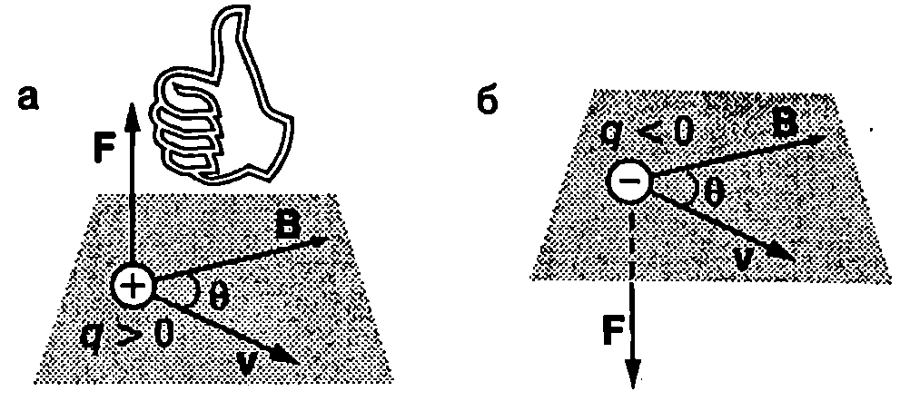
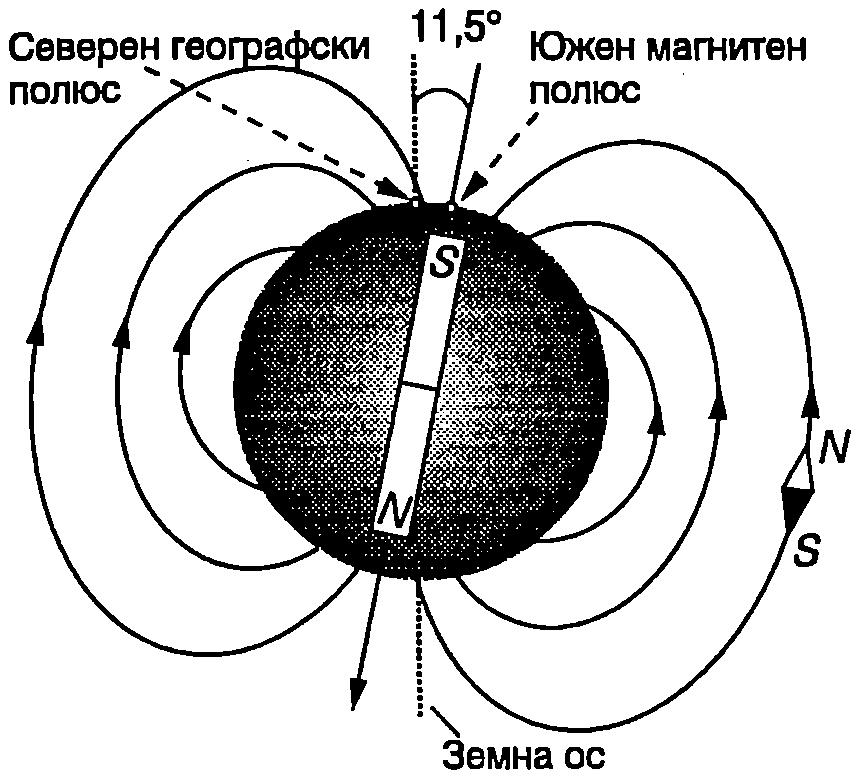

Още преди 3000 години в местността Магнезия (в Мала Азия) са открити късове от руда, които се привличат един към друг. Те получават името на тази местност и са наречени магнити. Всеки магнит има два полюса северен (N) и южен (S). Магнитите взаимодействат със сили, подобно на електричните заряди: едноименните полюси се отблъскват, а разноименните се привличат. Магнитно действие има и електричният ток - намотка, по която тече ток, привлича железни предмети, подобно на постоянен магнит.
Досега изучавахме взаимодействието на наелектризираните тела, което се осъществява посредством електричното поле. По подобен начин магнитните взаимодействия също имат свой посредник магнитното поле. Всеки магнит създава около себе си магнитно поле. На друг магнит, поставен в това поле, действат сили. Например магнитното поле на Земята действа на стрелката на компаса със сили, които я завъртат и ориентират в направление север-юг. По този начин магнитните сили не действат от разстояние, а непосредствено те се пораждат от полето на мястото, където се намира магнитната стрелка, и са приложени върху нея.
Магнитна индукция
Фиг. \ref{fig:62.1}а илюстрира как с помощта на малка магнитна стрелка може да се очертае силова линия на магнитното поле на прав магнит. Обърнете внимание, че в различни точки от полето стрелката се ориентира по различен начин. Физичната величина, която характеризира магнитното поле във всяка точка от пространството, се нарича магнитна индукция и се означава с . Подобно на интензитета на електричното поле, магнитната индукция е векторна величина има големина и посока. Посоката, която сочи северният полюс на малка магнитна стрелка, поставена в дадена точка от магнитното поле, се приема за посока на магнитната индукция в тази точка от полето.
Математическите линии, които показват посоката на магнитната индукция , се наричат индукционни линии: във всяка точка от магнитното поле векторът е насочен по допирателната към индукционната линия, преминаваща през тази точка (Фиг. \ref{fig:62.1}б).

Магнитно поле на прав магнит.
`Фиг. 62.1`
Както знаем от електростатиката, интензитетът на електричното поле в дадена точка се определя посредством силата , която действа на пробен заряд , поставен в тази точка: . По подобен начин чрез магнитната сила, действаща на движещ се електричен заряд, може да се даде определение на магнитната индукция. Опитно е установено, че:
-
Магнитни сили действат само на движещи се заряди.
-
Магнитната сила зависи от посоката на движение: тя е нула (), когато зарядът се движи успоредно на индукционните линии, и е максимална (), когато скоростта на заряда е перпендикулярна на индукционните линии.
-
Максималната магнитна сила е правопропорционална на големините на заряда и на скоростта му : .
Следователно силата зависи както от големината на заряда , така и от скоростта му . Опитът обаче показва, че за дадена точка от полето отношението е еднакво за всички заряди, т.е. не зависи от и от . Това отношение характеризира магнитното поле в тази точка и по определение се приема за големина на магнитната индукция:
Единицата за магнитна индукция се нарича тесла (T). От формула \eqref{eq:62.1} следва, че където е отчетено, че 1C/s = 1A.
Магнитните полета на повърхността на неутронните звезди са около T, а полето близо до голям електромагнит в от порядъка на 1 T. Магнитното поле на Земята е много по-слабо: магнитната му индукция в близост до земната повърхност е около T. Съвременните методи за медицинска диагностика позволяват да се изследват изключително слабите магнитни полета на сърцето и мозъка, чиято магнитна индукция е около T.
Индукционните линии се чертаят така, че гъстотата им да е правопропорционална на големината на магнитната индукция. Там, където магнитното поле е силно, индукционните линии са разположени близо една до друга, а областите със слабо поле те се раздалечават.
Магнитно поле, чиято индукция В има една и съща големина и посока във всички точки, се нарича еднородно (хомогенно) поле. Неговите индукционни линии са успоредни прави, разположени на еднакви разстояния една от друга.
Магнитна сила
Магнитната сила , която действа на частица със заряд , движеща се в магнитно поле, е
Това уравнение, от една страна, може да се разглежда като определение на ве личината магнитна индукция: индукцията на магнитното поле в дадена точка от пространството се определя чрез измерване на магнитната сила , действаща на заредена частица, преминаваща със скорост през тази точка. От друга страна, когато е известно магнитното поле, с помощта на векторното уравнение \eqref{eq:62.2} се определя магнитната сила, действаща на заредена частица. Посоката на силата съвпада с посоката на векторното произведение когато зарядът на частицата е положителен () и е противоположна при отрицателен заряд () Следователно магнитната сила винаги е перпендикулярна както на скоростта на частицата, така и на магнитната индукция на полето: векторът е перпендикулярен на равнината, зададена от векторите и (Фиг. \ref{fig:62.2}).

`Фиг. 62.2`
Фиг. \ref{fig:62.2} илюстрира как се прилага правилото на дясната ръка за определяне посоката на векторното произведение . Големината на магнитната сила е
където е големината на електричния заряд, а — по-малкият ъгъл между векторите и (Фиг. \ref{fig:62.2}). Магнитната сила е максимална при т.е. когато частицата се движи перпендикулярно на индукционните линии на магнитното поле (). Тогава .
Магнитно поле на Земята
Английският физик Уйлям Джилбърт (15441603) пръв установява, че над намагнитено метално кълбо магнитната стрелка се ориентира по същия начин, както стрелката на компаса в различни географски райони. Оттук той стига до извода, че самата Земя представлява един огромен магнит. Тъй като северният полюс на стрелката на компаса се привлича от южния магнитен полюс на Земята, можем да направим извода, че последният е разположен в близост до северния географски полюс (северният полюс на стрелката на компаса сочи географската посока север). Съвременните изследвания показват, че магнитните полюси на Земята са изместени на ъгъл от нейната ос на въртене (Фиг. \ref{fig:62.3}). Предполага се, че земното магнитно поле се поражда от електрични токове, които текат в течното ядро на Земята.

Магнитно поле на Земята.
`Фиг. 62.3`
Някои животни използват магнитното поле на Земята за ориентиране. Например опити с домашни гълъби показват, че те губят способността си да се ориентират в облачно време, ако към главите им се прикрепят малки постоянни магнити. Бактерии, които живеят в тинята, използват земното магнитно поле, за да определят посоката, в която трябва да плуват (надолу). Пренесени от северното в южното полукълбо, където посоката на вертикалната компонента на индукцията на земното магнитно поле е противоположна, бактериите вместо да плуват надолу към тинята, изплуват на повърхността. В някои органи на домашните гълъби и пчелите, както и в тинните бактерии, е установено наличието на малки магнитни частици, които се ориентират в магнитното поле на Земята, подобно на стрелката на компас.
Пример 62.1
Електрон се движи със скорост която е насочена под ъгъл спрямо вектора на индукцията в на магнитното поле на Земята. Определете магнитната сила, която действа на електрона, и я сравнете със силата на тежестта . Големината на магнитната индукция на земното магнитно поле е Зарядът на електрона е , а масата му е . \end{psexample}
Решение
; В разгледания пример магнитната сила, която действа на електрона в сравнително слабото магнитно поле на Земята, е около 90 милиарда пъти по-голяма от силата на тежестта. Поради това движението на потоците от заредени частици (електрони и протони), които идват от Слънцето и навлизат в горните слоеве на земната атмосфера, се определя от магнитното поле на Земята, а не от гравитацията. При определени условия тези частици достигат и по-плътните слоеве на атмосферата (главно около полюсите). Тяхното движение в атмосферата представлява електричен ток, чието магнитно поле се наслагва към магнитното поле на Земята и предизвиква сложен комплекс от явления, каквито са магнитните бури. По време на магнитна буря се регистрират значителни изменения на магнитното поле в атмосферата. Особено силни са магнитните бури при повишена активност на Слънцето, когато върху неговата повърхност се появяват огромни петна.
Задачи
-
При какво условие заредена частица може да се движи праволинейно и равномерно в еднородно магнитно поле?
-
Частица със заряд се движи перпендикулярно на индукционните линии на еднородно магнитно поле с индукция . Колко е скоростта на частицата, ако върху нея действа магнитна сила ?
-
Във вакуумната камера на лабораторна постановка е създадено еднородно магнитно поле с индукция , която е насочена вертикално нагоре. В камерата попада протон с кинетична енергия , движещ се хоризонтално в посока изток-запад. Определете: а) скоростта на протона; б) големината и посоката на магнитната сила, действаща на протона; в) колко пъти ускорението на протона е по-голямо от земното ускорение.
-
Електрон се движи в еднородно магнитно поле с индукция . Изразете чрез единичните вектори и на правоъгълна координатна система вектора на магнитната сила , действаща на електрона в точка от магнитното поле, през която той преминава със скорост .
-
Протон попада със скорост в точка от магнитно поле с индукция . Определете магнитната сила, действаща на протона.